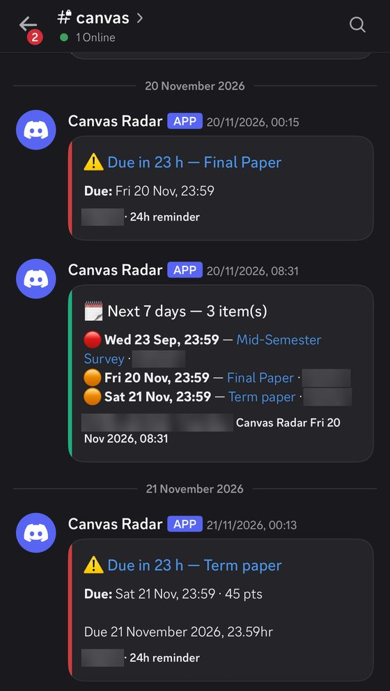

Jan 2016 – Jul 2016
Supervisor
Daiso Japan · Malaysia
Managed three shops (One Utama, IOI City Mall and Main Place Mall), covering crew scheduling, cash flow and logistics.
Curriculum vitae · Singapore / Malaysia
Wandering between the human mind and the computer.
PhD student in Information Systems & Analytics at the National University of Singapore.
National University of Singapore · Information Systems & Analytics
Intel Corporation · Contract
BMAT Music Innovators · Freelance · Remote (Barcelona, Spain)
Universiti Tunku Abdul Rahman (UTAR) · Full-time
Finexus Group · Greater Kuala Lumpur
Daiso Japan · Malaysia
Managed three shops (One Utama, IOI City Mall and Main Place Mall), covering crew scheduling, cash flow and logistics.
National University of Singapore
Universiti Tunku Abdul Rahman (UTAR)
National University of Malaysia (UKM)
73 citations · h-index 3 · i10-index 2 Google Scholar, Nov 2026
Book chapter · Instructional Technology Theory in the Post-Pandemic Era, pp. 198–230
Cited by 3
Journal · Computer Applications in Engineering Education 31 (6), 1705–1722 (Wiley)
Cited by 16
Journal · Multidisciplinary Applied Research and Innovation 3 (4), 43–48
Cited by 1
Journal · Electronic Journal of Computer Science and Information Technology 7 (1)
Cited by 49
Conference · 2021 9th International Conference on Information and Communication Technology (ICoICT), IEEE
Cited by 4
IUCEL 2022
Jun 2022Faculty of Electrical & Electronic Engineering, UTHM
Aug 2022Malaysia Innovation Association
Mar 2022Universiti Tunku Abdul Rahman
Oct 2022NUS Canvas Radar is a small app I built to keep track of my coursework, because apparently my brain has better things to do than remember due dates 🤪. Every two hours, a crawler runs through GitHub Actions and uses the NUS Canvas REST API to check for new assignments, quizzes, discussions, and lecturer announcements. It sends updates to Discord when something new appears or a due date changes, and gives deadline reminders from seven days ahead down to one hour before. Once I've submitted an item, it stops sending reminders for it.
A private dashboard running on my own machine shows my coursework progress alongside a personal to-do list. I can also add a to-do by sending a message to a Discord channel from my phone, and it will appear on the dashboard.
Currently private. Contact me if you want to know more.

Bilingual English and Chinese website for the Gurun Buddhist Association in Kedah, Malaysia. It presents the association's story and impact, its building fund, an events calendar and weekly activity schedule, volunteer sign-up and donations.
Learning software for mechanical engineering students, built around the flipped classroom approach. Its interactive environment uses 2-D and 3-D animation to strengthen visualisation and problem-solving, in line with engineering education 4.0.
Online shopping system for dining utensils, with a product catalogue, product management and invoice generation.
Website on anxiety disorder offering music therapy, video therapy, a chatbot and the DASS test, made to raise public awareness.
International Prostate Symptom Score screening tool for assessing and tracking prostate symptoms.
Languages